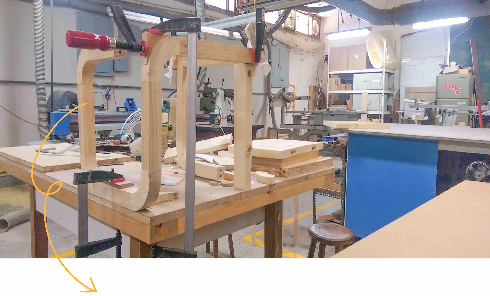

Sophia Tseng
This is a self-conducted project I did over summer break. It is an attempt to explore woodshop facility, woodworking techniques, and the material itself. My first piece of furniture! I really enjoyed!!
 The curved outline made it really difficult to clamp the structure when assembling.
I needed the help of radiused jigs, external support, and the desk surface in order to fix every piece.
It is now by the door at my home, my family uses it when we put on shoes.
Now that I've gained more knowledge and experience in woodworking, the method of just chopping wood into pieces was a bit abrupt. It would look nicer if I had followed the grain direction and paid more attention to the material itself. Despite that, I still like the form!